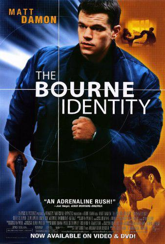
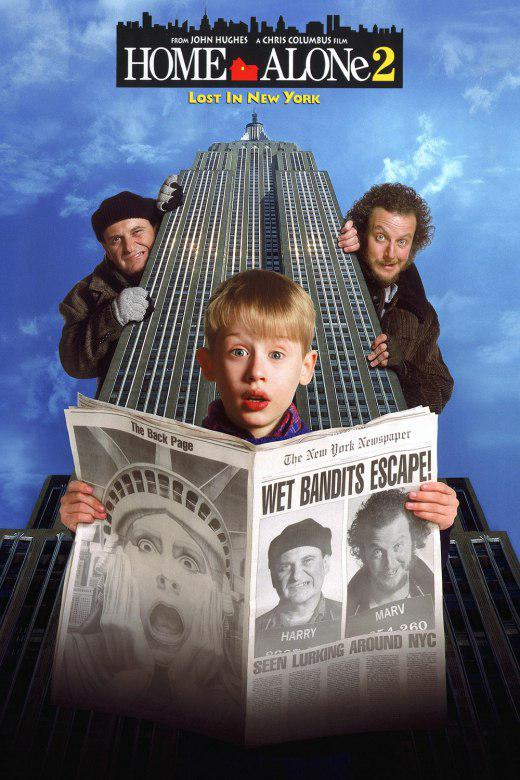

Genres: Action | Crime | Thriller
Release Date: 21 December 2012
Description: A homicide investigator digs deeper into a case involving a trained military sniper who shot five random victims.

Genres: Action | Mystery | Thriller
Release Date: 14 June 2002
Description: A man is picked up by a fishing boat, bullet-riddled and suffering rom amnesia, before racing to elude assassins and attempting to regain his memory.
Genres: Action | Crime | Drama | Mystery | Thriller
Release Date: 12 January 2018
Description: An Insurance Salesman/Ex-Cop is caught up in a criminal conspiracy during his daily commute home.

Genres: Adventure | Comedy | Family
Release Date: 20 November 1992
Description: One year after Kevin was left home alone and had to defeat a pair of bumbling burglars, he accidentally finds himself in New York City, and the same criminals are not far behind.